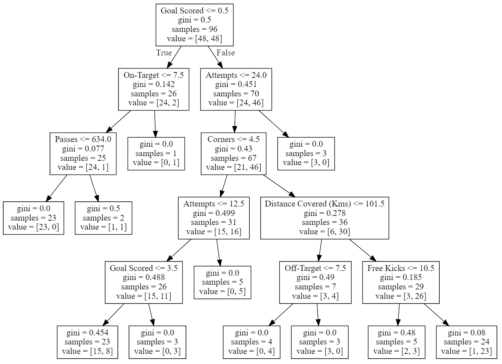
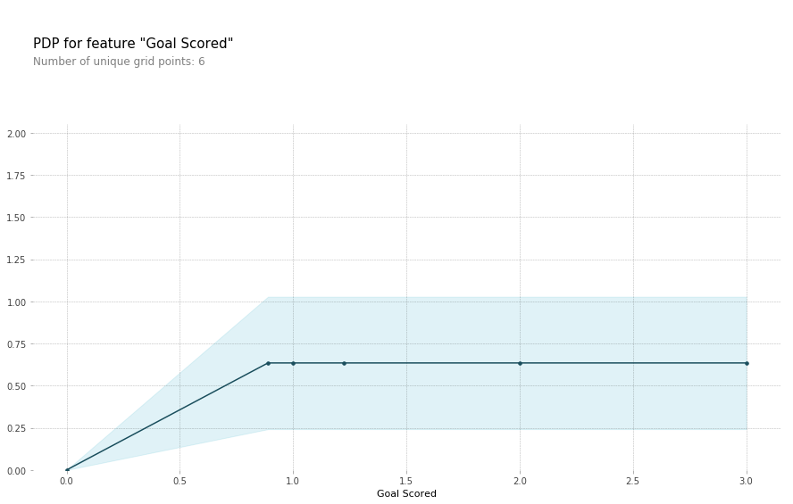
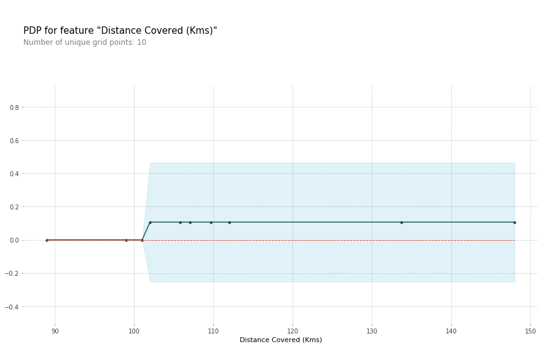
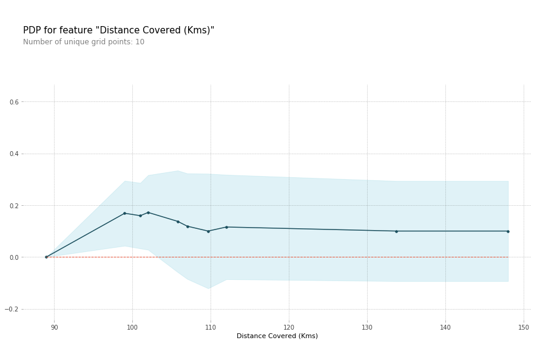
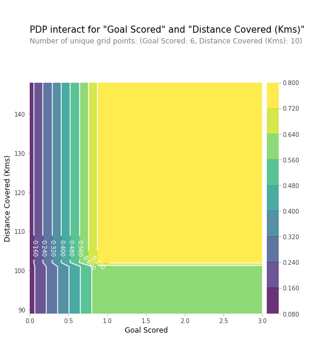

机器学习可解释性之部分依赖图 Partial Dependence Plots
本篇翻译自Kaggle机器学习可解释性微公开课🎓，本篇时第三课时，主讲利用部分依赖发现数据如何影响预测
Check source at Kaggle by Dan Becker, translate by waynehfut
部分依赖图
排列重要性展示了哪些变量最容易影响预测结果，而部分依赖图则是展示了特征如何影响最终预测结果。
这项手段对于回答下列问题十分有利：
- 在固定住其他房屋相关的特征后，经度和纬度对房价会有什么样的影响？重申这一点，即为在不同位置房子应该如何定价？
- 预测两组人群的健康差异主要是由于饮食习惯还是其他的因素？
如果你对线性回归和逻辑回归模型很熟悉，部分依赖图可以用模型中相似的系数来解释。但是，复杂模型的部分依赖图可以捕获到比简单模型中系数更为复杂的模式。如果你对线性回归和逻辑回归不是很熟悉，也不用担心这些比较。
我们将展示一系列代码，解释这些图的背后涵义，之后审查代码以便于后期创建这些图
如何生效
就像排列重要性，部分依赖图在模型训练完毕后才进行计算。这些模型在真实数据中调优同时没有以其他任何方式进行人为修改。
在我们之前提到的足球例子中，队伍之间有诸多的不同。如：过了多少个人，射门多少次，记录的进球等。乍一看似乎很难解开其中这些特征对最后结果的影响。
要查看部分图如何分离每个要素的效果，我们首先考虑单列数据。例如，一列数据可能展示了50%的控球率，100次过人，10次射门和1次进球。
我们将使用已经训练好的模型去预测可能的结果（获得"最佳球员"的概率）。但我们反复改变一个变量的值来进行一系列的预测。我们可以预测队伍控球40%时的结果，之后预测控球50%时的结果，以及在60%时的结果，等等。我们追踪控球率（横轴）从小到大变化时的预测结果（纵轴）。
基于上述描述，我们仅使用一列数据。特征之间的相互影响可能会造成单列图异常。因此，我们在原始数据集中的多行不断的重复这个心理实验，之后我们在垂直坐标上画出平均预测结果。
代码示例
建立模型仍然不是我们关注的，因此我们不去关注数据探索或者是模型建立的代码。
1 | import numpy as np |
为了便于解释（For the sake of explanation)，我们第一个例子使用你可以在下面看到的决策树。在实践中，你将需要适用于真是世界中更加复杂的模型。
1 | from sklearn import tree |

理解这棵树：
- 有孩子节点的叶子节点在顶部展示了分割标准。
- 底部的值对分别显示了树的该节点中数据符合分割标准的真值和假值得数量
接下来是使用PDPBox library创建部分依赖图的代码
1 | from matplotlib import pyplot as plt |

在解释这个图时，有一些值得注意的点。
- y轴用以解释预测中从基线或最左边值预测的变化
- 蓝色阴影表示了置信度
对于这个特定的图而言，我们可以看出一次进球数能够大大的增加你获得“最佳球员”的机会。但是额外的进球对于预测而言并没有太多的影响。
这里是另一个例图：
1 | feature_to_plot = 'Distance Covered (Kms)' |

这个图似乎过于简单而无法表现出真实现象。实质上是模型太过简单了，你应该可以从上面的决策树发现这个实际上代表了模型的结构（waynehfut注：101.5km为节点）
你可以很容易的比较不同模型的结构和涵义，这里提供了一个随机森林模型的示例图。
1 | # 构建随机森林模型 |

这个模型认为你如果跑动超过100km的话，更有可能获得最佳球员。虽然跑的更多导致了更低的预测结果。
通常，这个曲线的平滑形状似乎比决策树模型中的阶梯函数更合理。因为这个数据集足够小因此我们需要在解释模型时小心翼翼的处理。
2D的部分依赖图
如果你关心特征间的相互影响，那么二维的部分依赖图将会很有用，一个例子可以说明清楚这个是什么。
我们对于这个图仍然使用决策树。他将构建一个非常简单的图，但是你应当可以将这个图与原来的决策树进行匹配。
1 | # 与前文的部分依赖图相似，我们使用pdp_interact替换了pdp_isolate,pdp_interact_plot替换了pdp_isolate_plot |
结果如下：

这个图展示了任意进得分和覆盖距离组合可能的预测结果
例如，我们看到最高预测结果出现在至少进了一球并跑动接近100km的时候。如果没有进球，覆盖距离也无关紧要了。你能够通过追踪0进球的决策树来看到这一点吗？
但是，如果他们获得进球，距离会影响预测。确保您可以从2D部分依赖图中看到这一点。你能在决策树中看到这种模式吗？